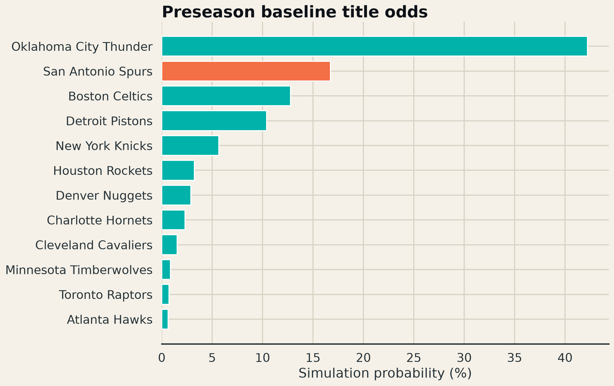
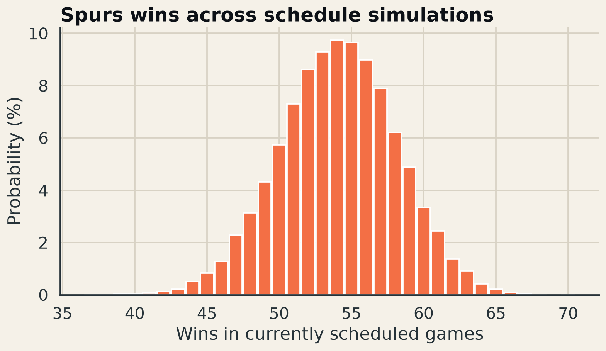

What do prior team strength and the assigned schedule imply before the season begins, and how should that baseline update when new evidence arrives?
The schedule model projects 54.1 wins across the 80 currently assigned games. In the separate contender knockout baseline, San Antonio ranks No. 2 with a 16.7% title probability.
The estimates are baselines, not forecasts carved in stone. Prior adjusted net rating is regressed toward average, game probabilities include home court/rest/travel, and the title model excludes injury and transaction assumptions. The CSV outputs make every scenario parameter replaceable as 2026–27 evidence arrives.


Move to Bayesian sequential updating, publish calibration curves and Brier scores, and incorporate player-availability priors without letting current betting markets become an opaque substitute for basketball assumptions.